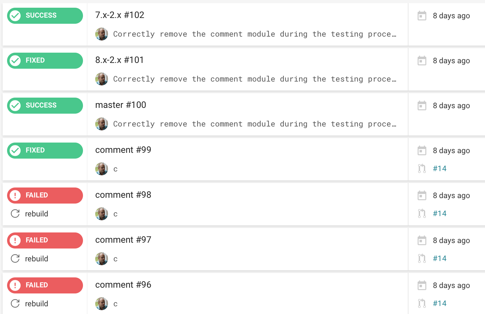

A few things I learned when
working with large Drupal sites


One-step deployment
- Deploying a new version of a site should be a one-step process.
- Updating the site should be a one step process.
- Getting a local version of the site should be a one-step process.
Write automated tests early
Use the right tools
Github, Circle CI, DigitalOcean (~50$ a month)

Test and automate everything you can
- WCAG level-A compliance.
- CSS best practices.
- Spot visual differences quickly.
- ...


Agile development
(we pretty much do it already!)
- Minimum viable product.
- Keep it simple.
- Release early, release often.
- Implicate the client as much as possible.
- Always reshuffle priorities (no detailed long roadmaps).
- agilemanifesto.org